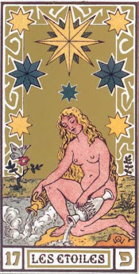

Star
Christian basis
In the earliest surviving tarot, that of the Cary-Yale, the Star card, like that of the Moon and Sun, does not appear. The first time we see the Star in a deck that is definitely Milanese is in the set of six cards added to the Pierpont-Morgan-Bergamo. It is possible that the iconography in Milan derives frm that o fHope, which does not appear in the PMB. Only in the Minchiate deck, an expanded 40 trump deck used in Florence and Bologna, are there these three virtues, followed later by Star, Moon, and Sun. There, the virtues follow directly after the cards for the Devil and the Tower, in the position where the Star card appears in all known tarot orders..
It is my hypothesis--undoubtedly not original with me, although I haven't read it elsewhere--that between the Cary-Yale and PMB decks, the card-maker or his employer decided to switch to the themes used in nearby Ferrara, while at the same time keeping some of the motifs of the Cary-Visconti cards, to help players identify the right place in the sequence for the new card. At the same time we can associate the Star with Hope iconologically. First comes the star of Bethlehem, our Hope; then Faith lights our dark world like the Moon; and finally Christ comes in full glory at the Second Coming, like the Sun. After that the destruction of the world comes in fire brighter than the sun, and then the New Jerusalem, shining so bright, according to the Book of Revelation, that the sun and moon are no longer needed. (1)
First, look at the two Milanese cards together. There is a heavenly body emitting light at the top right of the Hope card, close to where the star is in the Star card. The major difference is that the lady is kneeling in the one, standing and reaching out in the other. Both are similar to one of Giotto's virtues in Padua, the one labeled "Spes," the name of the Roman Goddess of Hope. The figure is standing and reaching, as in the Sforza Star card. But instead of the heavenly body, Giotto's has a crown. (1a)
Then there are the cards from Ferrara and Bologna (above). In the d'Este card, almost contemporary with the Cary-Visconti, two men in robes look up at a star. One is pointing at the star, the other in a more horizontal direction. One of the men holds a book. In the next card, a little later probably from Bologna, from the fragmentary "Rothschild" deck, the men have crowns, and there is a cross on a globe at the left, just where the man had been pointing in the previous card. They are probably meant to be the Three Wise Men of the Bible, "following yonder star." One has a crown, one has a three-tiered tiara, and one, surprisingly, has the "Phyrgian cap" identifying him as Mithras! (2)
To approach the issue from another angle, let us look at the corresponding Minchiate cards. They are from the 18th century, but the design is probably 17th century, from either Florence or Bologna. The Minchiate Hope card is obviously derived from Giotto image, with its crown. And she is kneeling and praying like the Cary-Yale. She is praying to the King of Kings, the Hope of the World, as heralded by the Star of Bethlehem. He is also the "bright morning star" of Revelation 22:16, who will come to save his own from the destruction at the Apocalypse. For the Star card, we see a man on horseback following a beacon with a star overhead. It is one of the kings or wise men again (his crown is ambiguous), following the star, inspiring the faithful to do likewise. The two cards basically mean the same, in the active and passive modes. (3)
The "Marseille" style cards, starting with Noblet in 1650, show us seven stars, plus one big star in the center. The image of seven stars occurs in Revelation 1:16-20, where they are identified as the angels of the seven churches of Asia. Since this image is at the beginning of John's vision, what is suggested in the card is the beginning of the end-times. On the card, the woman with the jars is often portrayed with one foot on land and the other in the water. This, too, is a sign of the Apocalypse, described in Revelation 10:2: an angel in John's vision "put his right foot on the sea and his left on the land."
Another Christian interpretation, this one from a more recent text, is from Canto XXIX of Dante's Purgatorio, in which Dante sees seven lighted candles, and then in Canto XXXII, seven nymphs, who accompany him to two streams from which he must drink. These seven candles and seven nymphs seem to me a reference to the seven stars of Revelation 1:16, because the stars of the Revelation image are said to be in "candlesticks" (Rev 1:17, King James Version). In Dante's journey, similarly, he is about to leave Purgatory and enter Paradise. The two streams are curiously like the ones on the card flowing from the jugs. However they may not derive from Christian sources, as we shall see later in relation to Dionysus. (4)
Tarot historians sometimes identify the seven stars on the "Marseille"-style cards as the seven planets. In astrology, they were the rulers of fate; the star outshining them would then be the Star of Bethlehem and the "bright morning star" of Revelation 22:16. It was the coming of Jesus that allowed humanity to transcend fate, this world governed by the stars.
No doubt many purchasers of the cards in the 17th and 18th centuries would have immediately thought of the seven planets. However the seven "candlesticks" are just as likely. In addition, there is another group of seven lights in the sky they might have thought of. In the Bible, the seven planets are not mentioned as having any influence on human affairs. I find only one suggestion of such influence in the Bible, and that is in the Book of Job, in only one version, the King James. God challenges Job, "Canst thou bind the sweet influences of Pleiades, or loose the bands of Orion?" (Job 38:31) (5) The phrase "sweet influences" suggests influence on human affairs. But in the Vulgate, the Bible known in countries where the tarot was produced, there is no such suggestion. I give the Latin followed by the Douay-Rheims translation (6):
Numquid conjungere valebis micantes stellas Pleiadas, aut gyrum Arcturi poteris dissipare?
(Shalt thou be able to join together the shining stars the Pleiades, or canst thou stop the turning about of Arcturus?)Actually, what the Hebrew says literally is "the seven sisters," not the Pleiades specifically. The Vulgate, translated one instance of the Hebrew word for "sisters," taken today as the Pleiades (Job 9:9) " as "Hyades," another constellation and group of seven sisters. As a constellation, the Hyades were considered harbingers of rain when they rose in Greece, hence they had a relationship to Aquarius. (7)
But is the person on the card Aquarius? Aquarius was male, normally with only one jar. And why should the astrological "influences" of these two constellations be of any importance, when in the tradition most familiar to the purchasers of the cards it was the planets and the zodiac that made the most difference? We shall see in the next two sections. After that, I will give another Christian interpretation.
Notes, Christian basis:
1. Increasing brightness: M. J. Hurst, "Riddle of Tarot",http://web.archive.org/web/20040919015803/http://geocities.com/cartedatrionfi/Riddle.html.
1a. Goddess, see Wikipedia entry for "Spes." Giotto image: http://www.christusrex.org/www1/giotto/SV-spes.jpg.
2. "Rothschild" image: Kaplan, Encyclopedia of Tarot Vol. 1, p. 129.
3. Minchiate: http://www.unics.uni-hannover.de/rrzn/endebrock/coll/pages/i31.html, although this site is no longer accessible.
4. Dante: http://www.online-literature.com/dante/purgatorio/.
5. King James: http://net.bible.org/verse.php?book=Job&chapter=38&verse=31.
6. Vulgate: http://catholicbible.online/side_by_side/OT/Job/ch_38
6. Vulgate: http://catholicbible.online/side_by_side/OT/Job/ch_38
7. Hyades and rain: Pseudo-Hyginus, Fabulae 182, at http://www.theoi.com/Olympios/DionysosMyths.html#Birth.
The Cary Sheet and Egyptomania
The young person pouring from the jars first occurs in the Cary Sheet (at left below).
But it may not be a female. There are no breasts; even if the face and hair
look like a young woman's.
Yet young men were also depicted in such fashion, as we can see by comparing the card to contemporary representations of Aquarius.This is a style that is first seen in c. 1420 France.
Yet young men were also depicted in such fashion, as we can see by comparing the card to contemporary representations of Aquarius.This is a style that is first seen in c. 1420 France.
On the Cary Sheet he or she is naked, pouring water out of two jars
into a substantial body of water, where we can see the tails of two
fish. Above him or her is one large star surrounded by four smaller
stars. There is also a fifth star on his or her shoulder. A mountain with two
trees or flowers is in the background. What can this possibly have to do
with Hope and Jesus?
In Egypt, the star-goddess is Sothis, represented on Roman-era columns with a star over her head. These images were in above-ground temples, so I would suppose that some Europeans even in the 15th century would have seen them. And if not ones like that above, then at least in drawings of the Dendera zodiacs, which I will discuss in a moment.
The Greeks called the star Sirius, also known by them as the dog-star; it was the brightest thing in the
heavens after the sun and moon. Plutarch said the Greeks called the star
Isis, but that the Egyptians called it Sothis. It was also "Isis' water
carrier." In other words, she is the Egyptian version of the
Greco-Egyptian Aquarius. Roman era coins showed Isis riding a dog, a clear reference to the star in question. (1)
In Egypt her significance was that the star started rising above the horizon, just before sunrise, at the time of the Summer Solstice. Its rising signaled the beginning of the new year and also the start of the annual Nile flood, as explained by Plutarch and other Greek writers. The flood is the rising of Osiris so that the land, personified by Isis, will bear new life. It is what Isis longs for, and the people with her. So when Sothis rises, it is the water-carrier pouring water into the Nile, a time of great hope. (2)
But how did the Renaissance know that this Aquarius was female and poured water from two jars? In all the star-maps, before and since, the figure is male and pouring just one jar. Below is a 1661 representation, and the first few lines of the text, which give the mythological identifications. (3)
Deucalion is associated with the great flood. Perhaps that is why the card is sometimes seen as portending new beginnings. Below the image is a list of names. Ganymede is the cup-bearer of the gods. With him as Aquarius, it would be nectar flowing from the jars, spiritual substance, the drink that makes one immortal. As for Aristaeus, he taught the Greeks of Cous how to defend against the pestilence that occurred during the rising of the Dog Star: it was necessary to sacrifice to it as well as to "rain-making Zeus." (According to Kerenyi, the priests burned a certain plant, and the people breathed its fumes.) Cecops was a man above the waist and a serpent below: he really belongs with Capricorn. The other terms just mean "water-man" or "bucket." None is a young woman. (4)
The image of the young person as in the case of the Bateleur's hat and the Empress's scepter, might have come from the great zodiacs at Dendera, of which the Renaissance image-makers could have seen drawings. One of the two. cicular in shape, was in a small chapel on the roof of the temple, fairly easy of access. The other, horizontal, was inside. On the circular one, you can see the two jugs being poured by a male figure with breasts.
In fact, there is a zodiac from that time which has several signs in the Egyptian style, one of which is Aquarius, as a masculine-looking woman pouring water from two jars. (We can also see a different set of Twins, which will be relevant to the Sun card. I do not know why there are three fishes.) (5)
The image corresponds to what they would have seen in sketches from Dendera. An example is below, from a horizontal zodiac (as opposed to the most famous one, which is circular). (6)
Here Sothis, the cow on the right, is followed by two women, one of whom has water pouring from the upturned jugs in her hands. These are the consorts of Khnum, who assist him in managing the flow of the river. Khnum's cult center is on Elephantine Island, at the first cataract, the beginning of the inundation. (7)
You may have noticed that the water-carrier at Dendera does not have a
star over her head, another sign that she is not Sothis. The plants on her head tend to identify her as a river god. In that respect she is similar to the Hapi, a pai of masculine-built and attired gods, with a
river plant on their head (at right above).
Here are three representations from different zodiacs side by side (14). One looks female, except in dress; the second male in physique as well as dress, except for the hint of a breast; third would have looked, due to the obvious breast, both female and naked. In fact its gender is more ambiguous. River gods were fertility gods. And to ensure fertility, they sometimes had the attributes of both genders. The two Hapi, representing the Upper and Lower Nile, sometimes one with a lotus the other a papyrus, are the classic examples.
In the Cary Sheet image, there are two plants, probably trees, in the near background, one to the left of the woman and one to the right, in front of the mountain. There may be another tree at the top of the mountain. The tree at the top of the mountain may be a nod to Judeo-Christian tradition, of Moses climbing to the top of the mountain and seeing God; Jesus went up the mountain, too, and saw Elias (Matt. 17:1ff, Luke 9:28ff). For the other two trees, well, there are the tree of life and the tree of knowledge. But these do not correlate to a water-carrier. I will return to this issue in another sectin.
Why did the Egyptians have two jars instead of one? Egyptologist Desroches-Noblecourt says that they represent the Blue Nile and the White Nile, the clear and muddy branches upstream, whose outpourings from the mountains preceded the flood in Egypt. In the Dendera images, the streams are not differentiated into clear and muddy. Neither are they on the Cary Sheet. Mountain and plain seems to have been enough. In the 17th century, however, we do see one stream colored white and the other brown. I will explain later.
In Egypt, the star-goddess is Sothis, represented on Roman-era columns with a star over her head. These images were in above-ground temples, so I would suppose that some Europeans even in the 15th century would have seen them. And if not ones like that above, then at least in drawings of the Dendera zodiacs, which I will discuss in a moment.
In Egypt her significance was that the star started rising above the horizon, just before sunrise, at the time of the Summer Solstice. Its rising signaled the beginning of the new year and also the start of the annual Nile flood, as explained by Plutarch and other Greek writers. The flood is the rising of Osiris so that the land, personified by Isis, will bear new life. It is what Isis longs for, and the people with her. So when Sothis rises, it is the water-carrier pouring water into the Nile, a time of great hope. (2)
But how did the Renaissance know that this Aquarius was female and poured water from two jars? In all the star-maps, before and since, the figure is male and pouring just one jar. Below is a 1661 representation, and the first few lines of the text, which give the mythological identifications. (3)
Deucalion is associated with the great flood. Perhaps that is why the card is sometimes seen as portending new beginnings. Below the image is a list of names. Ganymede is the cup-bearer of the gods. With him as Aquarius, it would be nectar flowing from the jars, spiritual substance, the drink that makes one immortal. As for Aristaeus, he taught the Greeks of Cous how to defend against the pestilence that occurred during the rising of the Dog Star: it was necessary to sacrifice to it as well as to "rain-making Zeus." (According to Kerenyi, the priests burned a certain plant, and the people breathed its fumes.) Cecops was a man above the waist and a serpent below: he really belongs with Capricorn. The other terms just mean "water-man" or "bucket." None is a young woman. (4)
The image of the young person as in the case of the Bateleur's hat and the Empress's scepter, might have come from the great zodiacs at Dendera, of which the Renaissance image-makers could have seen drawings. One of the two. cicular in shape, was in a small chapel on the roof of the temple, fairly easy of access. The other, horizontal, was inside. On the circular one, you can see the two jugs being poured by a male figure with breasts.
In fact, there is a zodiac from that time which has several signs in the Egyptian style, one of which is Aquarius, as a masculine-looking woman pouring water from two jars. (We can also see a different set of Twins, which will be relevant to the Sun card. I do not know why there are three fishes.) (5)
The image corresponds to what they would have seen in sketches from Dendera. An example is below, from a horizontal zodiac (as opposed to the most famous one, which is circular). (6)
Here Sothis, the cow on the right, is followed by two women, one of whom has water pouring from the upturned jugs in her hands. These are the consorts of Khnum, who assist him in managing the flow of the river. Khnum's cult center is on Elephantine Island, at the first cataract, the beginning of the inundation. (7)
Here are three representations from different zodiacs side by side (14). One looks female, except in dress; the second male in physique as well as dress, except for the hint of a breast; third would have looked, due to the obvious breast, both female and naked. In fact its gender is more ambiguous. River gods were fertility gods. And to ensure fertility, they sometimes had the attributes of both genders. The two Hapi, representing the Upper and Lower Nile, sometimes one with a lotus the other a papyrus, are the classic examples.
In the Cary Sheet image, there are two plants, probably trees, in the near background, one to the left of the woman and one to the right, in front of the mountain. There may be another tree at the top of the mountain. The tree at the top of the mountain may be a nod to Judeo-Christian tradition, of Moses climbing to the top of the mountain and seeing God; Jesus went up the mountain, too, and saw Elias (Matt. 17:1ff, Luke 9:28ff). For the other two trees, well, there are the tree of life and the tree of knowledge. But these do not correlate to a water-carrier. I will return to this issue in another sectin.
Why did the Egyptians have two jars instead of one? Egyptologist Desroches-Noblecourt says that they represent the Blue Nile and the White Nile, the clear and muddy branches upstream, whose outpourings from the mountains preceded the flood in Egypt. In the Dendera images, the streams are not differentiated into clear and muddy. Neither are they on the Cary Sheet. Mountain and plain seems to have been enough. In the 17th century, however, we do see one stream colored white and the other brown. I will explain later.
Until I did some reading on European explorations in Egypt, I assumed that the card-makers would have been ignorant of such an explanation for the two jugs; they just copied what they saw. I now think differently. In ancient times, the Greeks explored the Nile as far as the beginnings of the highlands of Ethiopia. They declared, rightly, that the cause of the Nile flood was summer rains in Ethiopia. Plutarch reports this account in Isis and Orisis. (9)
After the fall of Rome, the first major contact by Europeans (including St. Francis) with Egypt was during the final Crusades, 13th century. Then it was by the trade routes through Cairo But in the late 15th century, there was even a European community in Ethiopia. As a result of these travelers, Europeans knew about the Nile and its division into the Blue and White Nile. The Blue Nile was a torrent during the summer, more black than blue, and it came directly from the mountains in the east. The White Nile was filled with white silt, clay from one of its tributaries. It had a relatively steady but meager flow all year long. Behind this river to the southwest there were no mountains that anyone could see, just desert. The silt it brought provided the rich agricultural soil of Egypt. The floodwater from the other Nile, in contrast, was needed to get that silt to the fields. I would imagine that this division of labor between the two Niles impressed medieval Egyptians as well as Europeans, and that the two jars would be readily identified with them by the end of the 15th century, when we see the Cary Sheet image with its mountain on one side and plain on the other. This is not a feature of other 15th century mages of a figure pouring from two jars. (10)
My speculation is that the mountain represents the highlands of Ethiopia, a metaphor for spiritual heights, and the water pouring out of the jar below it corresponds to the Blue Nile. From on high to swell its bank in a mighty turbulence, it is the masculine spiritual principle. The other one, in contrast, comes from the desert yet is rich in nutrients. It is the feminine nurturing principle, one which requires spirit to fulfill itself.
Placed where they are on the card, next to the head and the chest, the implication might be that one jar's stream comes from the intellect and the other from the heart. The two streams would then correspond to the two Platonic aspects of Venus, which was of great moment in the Renaissance (e.g. Titian's Sacred and Profane Love, although it didn't have this title until the 18th century). Physically nurturing love pertains to the "Common Aphrodite" of Plato's Symposium; spiritual or intellectual love is of "Heavenly Aphrodite." (11)
As for the two fish, they might be Venus and Cupid, who in Greek myth jumped into the Euphrates River (although all the other gods who fled went to Egypt) and changed into fish to escape the monster Typhon. Since they are at the bottom of the card, they may come from the adjoining constellation of Pisces. For the writer known to the Renaissance as Hyginus, its two fish were in fact associated with the Venus and Cupid of this legend. In another variation, Ovid identified the constellation Pisces as the horses ridden by Venus and Cupid, which changed to fish in the river. From this perspective, the two streams could be the Tigris and Euphrates in Babylonia, which had myths paralleling those of the Egyptians. (12)
On the other hand, the two fish are in the Denderah zodiac, and they are well away from the two fishes of the sign of Pisces. The designer of the Cary Sheet might simply have copied them from some drawing of the Denderah source.
One of the stars is on the shoulder of the young woman. This and her nakedness are both marks of Venus. A naked Greek goddess is usually Venus. To the Greeks and their Renaissance admirers, if Harpocrates equaled Priapus, the son of Venus and Dionysus, then Venus equaled Isis, mother of Harpocrates. The four other small stars could be the four other planets. The Egyptians, and even some Greeks, did not consider the Sun and Moon to be planets. (13)
For one thing, there are seven stars rather than five. In Egypt, the seven stars would have been the "seven Hathors" or "seven fates" that set a child's destiny at the time of his or her birth, and perhaps also the cycle of seven good years and seven bad years of the Nile, suggested by the Biblical story of Pharaoh's dream. However I have not found any reference to the seven Hathors in literature available in the 16th century, and the connection to Pharaoh's dream. So for now I have to fall back on the Christian explanation that I already gave, that the seven stars are either the seven planets or the seven Hyades, both representing fate. (16)
Noblet, perhaps looking a images from Dendera, makes the water-carrier more androgynous than in the Cary Sheet. Dodal and Conver make her more feminine; in fact she appears pregnant, as though to suggest the object of our hope. Noblet gives her a star on her belly, probably for this purpose. In Dodal it is an eye, perhaps the mysterious "eye of Horus" of which they might have heard.
From an Egyptianate perspective of 17th century France the bird on the tree could be the phoenix by the Greeks, the bird of regeneration as described in Herodotus, and associated by him with Egypt. (In Egypt the bird was called the bennu, but the 17th century would not have known that.) The phoenix was usually shown sitting on a fire, but not always. In the Bembine Tablet, it is shown simply in a priest's hand. We can identify it as a Phoenix by the tuft in back of its head.
The example closest to the Chosson and Dodal in place and time is one on the Frontispiece to the French translation of the Hypnerotomachia, Paris 1600, where there is no fire, just a flapping of wings facing the sun.
It is as described by the Roman poet Claudian (http://www.theoi.com/Thaumasios/Phoinix.html). The phoenix at the end of its life-span builds a nest "which shall be at once his tomb and his cradle."
...On this he takes his seat and as he grows weaker greets the Sun with his sweet voice; offering up prayers and supplications he begs that those fires will give him renewal of strength..On the card, there is no fire, which would cinch the identification. Perhaps that would have been too obvious, or the designer was not basing his design on Claudian.. However it is facing east, the direction of the rising sun, which has not yet risen. The fire only occurs after the sun god sends the bird one of his golden hairs, which lights the fire. No sooner is that accomplished than:
Straightway the life spirit surges through his scattered limbs; the renovated blood floods his veins. The ashes show signs of life; they begin to move though there is none to move them, and feathers clothe the mass of cinders. He who was but now the sire comes forth from the pyre the son and successor; between life and life lay but that brief space wherein the pyre burned.There is also Horapollo (Boas trans., p. 61):
When they wish to depict the soul delaying here a long time, or a flood, they draw the phoenix. ...A flood, since the phoenix is the symbol of the sun, than whch nothing in the universe is greater. For the sun is above all things and looks down upon all things. .Also, after relating that the bird lives for 500 years before returning to Egypt to die, he adds (same page)
...whatever the Egyptians do in the case of the other sacred animals, the same do they feel obliged to do for the phoenix. For it is said by the Egyptians beyond all other birds to cherish the sun, wherefore the Nile overflows for them because of the warmth of this god, concerning which we have spoken a little above.Apparently the sun is what somehow brings the water of the flood, since it always occurs in the summer. And the phoenix, in virtue of its relationship to the sun, is also a symbol of the flood. There is no mention of a fire.
There are other possibilities--the stork, for example, which in European legend was the bird that brought babies from heaven. Or no particular bird. But it seems to me that the phoenix is the most likely interpretation. It also figured prominently in alchemy, as we shall see. (18)
 Why, from an Egyptian perspective, is the woman sometimes shown pouring
one jar onto the land and the other into the water? Plutarch reports the
ritual mixing of water with earth, Osiris with Isis, to ensure the
great mixing of the flood. Hence the water is poured on the land,
emulating the flood. The water also goes out to sea; hence water onto
water. Alternatively, on our right side is
the White Nile, rich in nutrients, now a metaphor for the body as
opposed to the spirit. The water is not muddy in most early versions of the Marseille, but is in the Chosson, which may be as early as 1672. Chosson is not documented as a card maker until 1735, but the
initials on the Chariot card, which are often those of the card makers, are something else, GS; also, the date on
the 2 of coins is 1672. Ross Caldwell tells us that there was a registered card naker in Marseille
in 1672 named Guilhen Sallonetz. So probably Chosson bought out
Sallonetz, but in continuing the other's company, even if under a
different name, he was entitled to claim 1672 as the date of inception.
(8) For
further associations we will have to step into the Greek mysteries
and the doctrine of reincarnation.
Why, from an Egyptian perspective, is the woman sometimes shown pouring
one jar onto the land and the other into the water? Plutarch reports the
ritual mixing of water with earth, Osiris with Isis, to ensure the
great mixing of the flood. Hence the water is poured on the land,
emulating the flood. The water also goes out to sea; hence water onto
water. Alternatively, on our right side is
the White Nile, rich in nutrients, now a metaphor for the body as
opposed to the spirit. The water is not muddy in most early versions of the Marseille, but is in the Chosson, which may be as early as 1672. Chosson is not documented as a card maker until 1735, but the
initials on the Chariot card, which are often those of the card makers, are something else, GS; also, the date on
the 2 of coins is 1672. Ross Caldwell tells us that there was a registered card naker in Marseille
in 1672 named Guilhen Sallonetz. So probably Chosson bought out
Sallonetz, but in continuing the other's company, even if under a
different name, he was entitled to claim 1672 as the date of inception.
(8) For
further associations we will have to step into the Greek mysteries
and the doctrine of reincarnation.Finally I want to show one alchemical image that again relates Aquarius to Isis. It is the frontispiece to Michael Maier's 1614 Arcana Arcanissima, Secret of Secrets. It shows Isis putting out Typhon's fire with a bucket of water. Here we must be aware that the Devil, later explicitly identified with Typhon and called by Plutarch the evil principle, was the second to the next preceding card in the tarot sequence, with a burning tower, called "House of the Devil" at that time, as that immediately preceding.
References, Greek mysteries:
1. Isis as dog-star: Plutarch, Isis and Osiris XXI, "Water-carrier": Isis and Osiris XXXVIII. Both at http://thriceholy.net/Texts/Isis.html.
1a. Image: www.christusrex.org/
{kind=link}
2. Flood: Plutarch, Isis and Osiris XXXVIII-XXXIX.
3. Aquarius: My source for the image is http://hsci.cas.ou.edu/images/jpg-100dpi-5in/17thCentury/Bayer/1661, although it no longer works for me. Similarly for the text:
http://hsci.cas.ou.edu/images/jpg-100dpi-5in/17thCentury/Bayer/1697/Bayer-1697-K4v.jpg.
{kind=link}
4. Information from Wikipedia entries on specific names. Kerenyi citation is in Wikipedia entry on Sothis. However I have not been able to verify the citation.
5. Zodiac: from Ernst and Johanna Lehner, Astrology and Astronomy.
6. Photo by author.
7. Information from Desroches-Noblecourt, Le Fabuleux Heritage de l'Egypte, p. 123, and http://en.wikipedia.org/wiki/Khnum.
8. Same.
9. Greek explorations: http://en.wikipedia.org/wiki/Nile. Plutarch: Isis and Osiris XXXIX.
10. 13th century: Many websites describe Europeans in Egypt just before and during the Malmuk period, e.g. http://www.ucalgary.ca/applied_history/tutor/islam/fractured/egypt.html. Ethiopia: http://en.wikipedia.org/wiki/Nile. On Blue and White Nile: Wikipedia articles with these titles.
11. Titian: http://en.wikipedia.org/wiki/Sacred_and_Profane_Love. Plato: http://classics.mit.edu/Plato/symposium.html. Search "Aphrodite"
12. Venus and Cupid: Pseudo-Hyginus, Astronomica 2. 30. Pisces: Ovid, Fasti 2. 458 ff. Both at
http://www.theoi.com/Olympios/AphroditeMyths.html.13. Egyptian planets: http://www.egyptologyonline.com/astronomy.htm, among others. Greek planets: http://en.wikipedia.org/wiki/Hellenistic_astronomy, under "Early Greek astronomy."
14. Desroches-Noblecourt, Le Fabuleux Heritage de l'Egypte.
15. Hapi: http://www.touregypt.net/featurestories/Hapi.htm. Image on left: http://www.unics.uni-hannover.de/rrzn/endebrock/coll/pages/i31.html. Image on right: http://www.britannica.com/EBchecked/topic-art/31065/4257/Aquarius.
16. Hathors: http://www.egyptianmyths.net/hathor.htm, among others.
17. Vulgate: http://vulgate.org/ot/job_9.htm. Hyades as nurses of Dionysus: Pseudo-Apollodorus, Bibliotheca 3. 26 - 29; Pseudo-Hyginus, Fabulae 192; Pseudo-Hyginus, Astronomica 2. 21; Nonnus, Dionysiaca 14. 143 ff. All at http://www.theoi.com/Olympios/DionysosMyths.html#Birth. Hathor: http://en.wikipedia.org/wiki/Hathor, http://www.egyptianmyths.net/hathor.htm.
18. Phoenix: Herodotus Histories II.73, http://www.bostonleadershipbuilders.com/herodotus/book02.htm. Claudian: http://www.theoi.com/Thaumasios/Phoinix.html. Image: de Rola, Golden Game p. 25. Also in Jung, Psychology and Alchemy, and Fabricius, Alchemy.
19. http://www.forum.tarothistory.com/viewtopic.php?p=458#p458
20. Reproduced in stanislas Klossowski de Rola, The Golden Game: Alchemical Engravings of the Seventeenth century, Thames and Hudson, London, 1997. p. 63
The Star card in relation to the Greek mysteries:
If you compare the lettering of the Chosson, above left, to that of the Conver on the right, you will notice that the letters "ILL" in "LETOILLE" look a lot like a "UL" as in "LE TOULE."
According to Flornoy and others, "Toule" is Marseille dialect for "spring" or "well." What Flornoy thinks is that the right side of the "L" for some reason did not print clearly on the paper, and that the word is clearly "LETOILLE," meaning "The Star." But why are the I and the first L touching only on the bottom, as opposed to both top and bottom, almost, on the Chosson? And no other letters touch at all. If it was a printing error, why wasn't it corrected in the 1761 edition? It seems to me that Conver might have decided to make a visual pun here, taking advantage of the proximity of the two letters I and L on the Chosson. How such a pun would relate to the imagery on the card is as follows. (1)
Daimonax relates the two jars to the description of an famous oracle by the Roman-era Greek travel writer Pausanias. The person wishing to know something had to undergo a certain ordeal. First he is purified with baths and other things. I will quote the passage in full:
He is led by the priests, not at once to the oracle, but to certain springs. Here he must drink what is called the water of forgetfulness, in order that he forget everything he has hitherto thought of. Then he drinks from another water, the water of Memory, that he may remember what he sees below.... After his ascent from [the oracle of] Trophonios the inquirer is again taken in hand by the priests, who set him upon a chair called the chair of Mnemosyne (Memory), which stands not far from the shrine, and they ask of him, when seated there, all he has seen or learned. After gaining this information they then entrust him to his relatives. These lift him, paralysed with terror and unconscious both of himself and of his surroundings, and carry him to the building where he lodged before with Tykhe (Fortune) and the Daimon Agathon (Good Spirit). Afterwards, however, he will recover all his faculties, and the power to laugh will return to him. (1a)
Jane Harrison gives a good argument for this being a Dionysian
initiation. In any case, it would have been part of the lore about "the
mysteries" in 16th-17th century Europe. Plutarch mentions this site in a
list with a few others. He then describes what the person at one of the
other sites saw, a certain Timarchos. It was not future events in this
life, but a vision of the afterlife. "What Timarchos saw was a vision of
heaven and hell, after the fashion of a Platonic myth. His guide
instructed him as to the meanings of things and how the soul shakes off
the body." (2)
Daimonax says that the jars on the card are the two springs, one of forgetting and one of remembering. But isn't that rather a stretch, from jars to springs?
Let us go to Mantua, halfway between Milan and Ferrara. In 1527-1528 Guilio Romano, a pupil of Raphael, covered the walls and ceilings of the Palacio Te with frescoes on the theme of Cupid and Psyche. In one corner of its centerpiece, the "Banquet of the Gods,” there are two figures, each with two jars, water gushing out of them. Goats are on the far right, possible allusions to Dionysus's childhood. One pair of streams falls on the ground, the other into water. (3)
Italian tarot historian Andrea Vitali, who draws attention to this mural in an essay on the Star card, thinks they relate to "The Cave of the Nymphs," an essay by the 2nd century Neoplatonic philosopher Porphyry. The essay, an allegorical interpretation of a passage in Homer's Odyssey, had recently been translated into Latin. Inside this cave, says Porphyry, there are two doorways, one leading to Heaven and the other to a new incarnation on earth. (4)
The mural does not correspond precisely to Homer's imagery. There may be a cave, into which the nymph dangles her foot. But there is no hint of doorways; what we see are two sets of two jars, with water flowing out of each in an ever-flowing stream, like water coming from two springs, as in Pausanias. In fact, the cave in the mural is as described in Pausanias: a narrow hole at the top, with the springs themselves above. One of them actually flows down into the opening.
In Greek myth, forgetting was associated with the River Lethe, which souls drank of in Hades before returning to the surface in a new incarnation. Similarly, in the mural, we see the water on the ground trickling down out of view; it could be the start of a river. The other body of water looks like a lake. (5)
In ancient literature, Mnemosyne is characterized as a goddess, the mother of the muses. Her identification with a spring is rare. Yet the opposition between Mnemosyne and Lethe is clear enough. The Orphic hymns so beloved by Ficino and Pico invoke Mnemosyne's aid against Lethe:
In the time of the tarot, the two streams of forgetting and remembering were actually very much in the popular consciousness. Even after more than a hundred years, Dante's Divine Comedy was still the masterpiece of the hour. With the invention of the printing press, more people could read what others were talking about. At the very highest part of purgatory, Dante sees two streams next to each other. He asks a woman who is picking flowers about it. She explains:
Daimonax says that the jars on the card are the two springs, one of forgetting and one of remembering. But isn't that rather a stretch, from jars to springs?
Let us go to Mantua, halfway between Milan and Ferrara. In 1527-1528 Guilio Romano, a pupil of Raphael, covered the walls and ceilings of the Palacio Te with frescoes on the theme of Cupid and Psyche. In one corner of its centerpiece, the "Banquet of the Gods,” there are two figures, each with two jars, water gushing out of them. Goats are on the far right, possible allusions to Dionysus's childhood. One pair of streams falls on the ground, the other into water. (3)
Italian tarot historian Andrea Vitali, who draws attention to this mural in an essay on the Star card, thinks they relate to "The Cave of the Nymphs," an essay by the 2nd century Neoplatonic philosopher Porphyry. The essay, an allegorical interpretation of a passage in Homer's Odyssey, had recently been translated into Latin. Inside this cave, says Porphyry, there are two doorways, one leading to Heaven and the other to a new incarnation on earth. (4)
The mural does not correspond precisely to Homer's imagery. There may be a cave, into which the nymph dangles her foot. But there is no hint of doorways; what we see are two sets of two jars, with water flowing out of each in an ever-flowing stream, like water coming from two springs, as in Pausanias. In fact, the cave in the mural is as described in Pausanias: a narrow hole at the top, with the springs themselves above. One of them actually flows down into the opening.
In Greek myth, forgetting was associated with the River Lethe, which souls drank of in Hades before returning to the surface in a new incarnation. Similarly, in the mural, we see the water on the ground trickling down out of view; it could be the start of a river. The other body of water looks like a lake. (5)
In ancient literature, Mnemosyne is characterized as a goddess, the mother of the muses. Her identification with a spring is rare. Yet the opposition between Mnemosyne and Lethe is clear enough. The Orphic hymns so beloved by Ficino and Pico invoke Mnemosyne's aid against Lethe:
Come, blessed power, thy mystic's mem'ry wakeGiven this opposition, if one is described in watery terms, it would be natural to describe the other that way as well.
To holy rites, and Lethe's fetters break. (6)
In the time of the tarot, the two streams of forgetting and remembering were actually very much in the popular consciousness. Even after more than a hundred years, Dante's Divine Comedy was still the masterpiece of the hour. With the invention of the printing press, more people could read what others were talking about. At the very highest part of purgatory, Dante sees two streams next to each other. He asks a woman who is picking flowers about it. She explains:
The water which thou seest springs not from vein. Restored by vapour that the cold condenses,Like to a stream that gains or loses breath;But issues from a fountain safe and certain,Which by the will of God as much regainsAs it discharges, open on two sides.Upon this side with virtue it descends,Which takes away all memory of sin;On that, of every good deed done restores it.Here Lethe, as upon the other sideEunoe, it is called; and worketh notIf first on either side it be not tasted.This every other savour doth transcend... (7)
Here the object is to drink a little from Lethe to forget your sins, and
then Memory, which he calls by the strange name Eunoe, to remember your
good deeds. It is a purification of the mind before entering Paradise.
There are two little dots over the last e in Eunoe, indicating that it
is a separate syllable. Dante did not make up the word: Eunoe is the
name of a nymph, said in some accounts to be the mother of Hecuba, queen
of Troy at the time of the Trojan War. The word is compounded of "eu,"
good, and "nous," mind: awareness of good, in other words. It fits the
context. (8)
Dante is beguiled by a nymph swimming in the Lethe, and when he is close enough she dunks his head in it, so that he swallows a little. Beatrice notices immediately that Dante's memory is slipping! She herself leads him to the Eunoe. After drinking, he tells the reader:
On the tarot card, there are only the two jars, corresponding to the figure of Aquarius. We need to see this in relation to the Mantua fresco. The card-makers had to economize in his design, not to make it too cluttered. So we see two jars, one for each spring. One leads to the lake of Memory, the immortals, and Dante's Paradise. The other forms the River Lethe and either keeps one in Purgatory or returns one to our world. On the cards as in the Romano fresco, one side goes into a large body of water while the other falls on the ground, where it could conceivably start a stream.
Now I can talk about the trees. Dante does not mention them. One of them, the fatter of the two, has leaves that are broad and point upwards; it looks to me like a Mediterranean fig (see illustration below). The fig is sacred to Dionysus. It is the tree that Dionysus used on himself sexually after his return to our world from the underworld. It also resembles both male and female genitalia. (10)
The other tree on the card, the narrower one, could be a white poplar. Poplars were sacred to Persephone and are associated, in her myths and those of other gods, with grief and regeneration. She or her husband Hades turned the nymph Leuce, who had been seduced or raped by him, into a white poplar next the Pool of Memory. This myth is described in Servius and in Virgil's Eclogues. Recall here that Hades and Persephone were assimilated to Dionysus/Liber and Ariadne/Libera in Roman mythology (see "Popess" section). So the association between the poplar and these gods could be where the card-makers got the idea for this tree, as both Servius and Virgil's Eclogues are mentioned often by Cartari. They are also the only reference I have found to Mnemosyne as a body of water as opposed to a goddess or a spring. (11)
The tree might also be a cypress, because of the density of its branches (see photo above). Cypresses were sacred to Apollo, Hades and Artemis. Since Artemis was the goddess of childbirth and Hades the god of death, that tree suggests birth and death, or death and rebirth. Apollo's associations are similar: he was born in a cypress grove, and a young man who died of love for Apollo was changed into a cypress. The cypress was well-known for its resistance to decay. (12)
Here it is significant that Memory is not only water, it is a pool or lake. The other must just gush out of the ground and become the source for the River Lethe. In both the Guilio Romano fresco and the tarot card, one spring runs onto the ground, the other into a lake or other large body of water.
Earlier we saw that the bird on the tree was probably the phoenix, a symbol of either death and new birth or death and rebirth. From a Dionysian perspective, the trees are the same.
Dante is beguiled by a nymph swimming in the Lethe, and when he is close enough she dunks his head in it, so that he swallows a little. Beatrice notices immediately that Dante's memory is slipping! She herself leads him to the Eunoe. After drinking, he tells the reader:
From the most holy water I returnedWith that the Purgatorio, ends, and we are ready for the Paradiso, and a full awareness of the good there. In this way the Divine Comedy is the Christian literary equivalent of an initiation into a mystery cult. His example also gives the card-makers, even of the Cary Sheet, permission to put the two pagan streams in the tarot.
Regenerate, in the manner of new trees
That are renewed with a new foliage,
Pure and disposed to mount unto the stars. (9)
On the tarot card, there are only the two jars, corresponding to the figure of Aquarius. We need to see this in relation to the Mantua fresco. The card-makers had to economize in his design, not to make it too cluttered. So we see two jars, one for each spring. One leads to the lake of Memory, the immortals, and Dante's Paradise. The other forms the River Lethe and either keeps one in Purgatory or returns one to our world. On the cards as in the Romano fresco, one side goes into a large body of water while the other falls on the ground, where it could conceivably start a stream.
Now I can talk about the trees. Dante does not mention them. One of them, the fatter of the two, has leaves that are broad and point upwards; it looks to me like a Mediterranean fig (see illustration below). The fig is sacred to Dionysus. It is the tree that Dionysus used on himself sexually after his return to our world from the underworld. It also resembles both male and female genitalia. (10)
The other tree on the card, the narrower one, could be a white poplar. Poplars were sacred to Persephone and are associated, in her myths and those of other gods, with grief and regeneration. She or her husband Hades turned the nymph Leuce, who had been seduced or raped by him, into a white poplar next the Pool of Memory. This myth is described in Servius and in Virgil's Eclogues. Recall here that Hades and Persephone were assimilated to Dionysus/Liber and Ariadne/Libera in Roman mythology (see "Popess" section). So the association between the poplar and these gods could be where the card-makers got the idea for this tree, as both Servius and Virgil's Eclogues are mentioned often by Cartari. They are also the only reference I have found to Mnemosyne as a body of water as opposed to a goddess or a spring. (11)
The tree might also be a cypress, because of the density of its branches (see photo above). Cypresses were sacred to Apollo, Hades and Artemis. Since Artemis was the goddess of childbirth and Hades the god of death, that tree suggests birth and death, or death and rebirth. Apollo's associations are similar: he was born in a cypress grove, and a young man who died of love for Apollo was changed into a cypress. The cypress was well-known for its resistance to decay. (12)
Here it is significant that Memory is not only water, it is a pool or lake. The other must just gush out of the ground and become the source for the River Lethe. In both the Guilio Romano fresco and the tarot card, one spring runs onto the ground, the other into a lake or other large body of water.
Earlier we saw that the bird on the tree was probably the phoenix, a symbol of either death and new birth or death and rebirth. From a Dionysian perspective, the trees are the same.
In this analysis of the details on the card, everything except the bird relates to the myth of Dionysus. The trees are his trees. The springs are his springs. Even the word "toule," seemingly on the card relates to him, by way of the springs. And the bird, while from a different myth, expresses the same thought.
Anther consideration, more speculative, is some verses written on gold leaf found in the 19th and 20th centuries, in some tombs in Italy and Greece. On each is the instruction to say "I am a child of Earth and Starry Heaven" when the soul of the deceased arrives at two springs. That sentence is thought to be an Orphic password, letting the guardians know that the soul has been initiated and so is worthy of being with the gods. There is also an instruction on which spring to ask for a drink from. Sometimes a cypress grows by one of them. The instructions vary as to how to identify the right spring; but in every case it reminds the soul to ask for a drink from the spring that is further away. Scholars hypothesize that drinking from one was meant to enable one to join the gods, while with the other, one will go back to our world for a new incarnation. (13)
In one of the verses, the spring to choose is called "Ennoia," meaning "forethought": it is a word very close to Dante's word "Eunoia." My speculation is that Dante knew about one of the gold leaves already in his day, but could not say anything because having it would have been considered grave-robbing. Also, he could not use the word "Ennoia" because in one of the heresies described by the Church Father Irenaeus, that was the name of the feminine aspect of God, corresponding to "Hochma" or "Sophia" in the Hebrew Bible. It would not be advisable to use heretical language. (14)
In any event, the card has a strong Orphic-Dionysian level of meaning, about springs of forgetting and remembering. It calls us to forget our previous modes of being, perhaps in the sense of detaching ourselves from it, but then to remember our deeds in that state of being so that we can advance.
In the 12 step program, this account reminds me of the fourth and ninth step, and so also all the steps in between. In these two steps, those of "inventory" and "making amends," the addict, instead of forgetting with wine, now remembers his actions committed in the throes of addiction; this memory gives hope of salvation. Remembering the harm he has done to people, he scrupulously makes amends to them. It is his purification, his Pugatorio, toward the same end as in Dante, to get past that old self. (15)
What is not in the 12 steps, unfortunately, is remembering why one drank, what the divine purpose was for the soul, and when in his life one fulfilled it in other ways. Even our addictions are good deeds from a certain perspective, good deeds misguided, attempts to achieve things seen briefly but then lost, toward which no other means seemed possible.
More generally, the card calls us to detach from the dominant modes of being in the world at this epoch. Instead, recover "the memory of the world," "la memoire du monde," as Flornoy calls it, that which has been forgotten because it was convenient to forget. Recover the old wisdom, the old mystery-schools, the old secrets. That is what the Renaissance was about, the rebirth of the old; it is what the alchemists, the kabbalists, and the tarot card designers were about, too. It is what the writers on the tarot are doing today when they explore its origins and mythic associations. Then (if I may paraphrase another of Flornoy's figures of speech), perhaps we can add to the water of immortality without disturbing it. (16)
The initiates are perhaps the two streams from the two jars, with two outcomes, one entering the lake of memory and the Eternals, the other the river of forgetfulness and the Eternal Round. Or perhaps the woman herself is Mnemosyne, pouring out two aspects of remembering, that which merges one's little consciousness with the Infinite and that which brings the Infinite into the world. These are also two aspects of hope depicted in the Minchiate Hope and Star cards: mortals briefly apprehending the Eternal One, with the promise of more, and the Eternal One briefly becoming incarnate, with the promise of return.
References, Star and Greek mysteries:
1. Flornoy: http://www.letarot.com/dossiers-chauds/le-toule/index.html. This copy of the 1760 Conver comes from http://www.camoin.com/tarot/Tarot-Marseille-Conver-1760.html.
1a. Daimonax: http://www.bacchos.org/tarothtm/14et17tempetoile1.html. Pausanias, Description of Greece 9.39.3 at http://www.theoi.com/Titan/TitanisMnemosyne.html.
2. Harrison, Prolegomena to the study of Greek Religion, p. 575. Accessible at Google Books.
3. My reproduction is from Sonia Cavicchioli, The Tale of Cupid and Psyche: An Illustrated History.
4. Vitali is at http://trionfi.com/0/i/c/17/v/. His reproduction of the scene is his Figure 7. The essay by Porphyry is at http://www.tertullian.org/fathers/porphyry_cave_of_nymphs_02_translation.htm.
5. Numerous classical references to the River Lethe are at http://www.theoi.com/Khthonios/PotamosLethe.html.
6. Orphic hymn: http:www.theoi.com/Text/OrphicHymns2.html#76.7. Purgatorio XXVIII, 130ff. at http://www.online-literature.com/dante/purgatorio/28/. This and the following are cited in Harrison, Prolegomena to the Study of Greek Religion, at Google Books.
8. Eunoe: http://en.wikipedia.org/wiki/Eunoë.
9. Dante quote: http://www.online-literature.com/dante/purgatorio/33/..
10. fig: http://en.wikipedia.org/wiki/Dionysian_Mysteries.
11. Leuce: http://en.wikipedia.org/wiki/Leuce_(mythology), referencing Graves' Greek Myths and Servius, Commentary on Virgil's Eclogues 7.61.
12. Cypress: http://www.theoi.com/Flora1.html; http://en.wikipedia.org/wiki/Cypress.
13. gold leaf: http://www.csun.edu/~hcfll004/lamella.htm.Orphics: http://www.bartleby.com/65/or/OrphicMy.html. Springs: Radcliffe G. Edmonds III, Myths of the Underworld Journey: Plato, Aristophanes, and the 'Orphic' Gold Tablets, p. 50, in Google Books. One recent commentator on the Star card, at http://www.cs.utk.edu/~mclennan/BA/PT/M16.html, says that the two trees are dark and white cypresses. Further away: Edmonds, p. 51.
14. Ennoea: Harrison, Prolegomena, p. 584, in Google Books. Irenaeus: Refutation of all heresies, I.1.1, I.12,1, 1.12.3, I.23.2, I.23.5, I.29.1, I.29.2, I.30.1. At http://www.gnosis.org/library/advh1.htm.
15. 12 step program: http://www.12step.org/.
16. memoire du monde: Pelerinage des Bateleurs, p. 190.
Summary thus far.
A general interpretation is emerging from Christian and Greek sources, of the Star lady as offering purification and the readiness forascent to the divine. That is what Dante's two streams suggest, tended over by the lady Mathilda. It is what the preparations for the cave of Trophonus suggest. But it can also go the other way, toward regeneration in the material realm. This is what the symbolism of the Nile flood, still mostly in the highlands of Ethiopia, suggests, as well as Porphyry's "Cave of the Nymphs." . Both roads are suggested by the Mantua fresco and one of the doors, at least to, Porphyry's "Cave of the Nymphs."
De Gebelin and Etteilla
{kind=link}
On the left is the card as drawn for de Gebelin. He of course
identifies the card with Isis, the dog-star. and the beginning of the rising of the Nile, an interpretation not
without foundation, but not, however, meaning the card is of Egyptian
origin, but rather that the card designer was inspired by the Greek and
Roman writers about Isis, especially Plutarch. He says that there are a butterfly and a flower on the card.as "emblem of regeneration and resurrection". The Egyptians thus "indicated at the same time that by the favor and the kindness of Isis. at the rising of the Canicle [Dog-star], the Countrysidess of Egypt, wh were absolutely naked, would be covered over in new crops." About the butterfly, he must not have seen the drawings that he put into his book.
Take the fourth page of the Book Thoth, 4. 8. 12. or the Deck of Cards named Tarots (of which the root is A Rosch, which signifies beginning (1), it is necessary to turn thus: Whoever does not have the beginning of the Science or the Doctrine, abuses himself in believing that he can understand the middle and the end;) the hieroglyph that the Ignorant have called The Star has always been a the second day of Creation.It is of interest that Etteilla could not give the figure on the card a sex. That is indeed Egyptian, in relation to the Hapi! Going a step beyond Gebelin, Etteilla claimed to be restoring the original Egyptian design; the butterfly, however, unlike in Greece, was of no symbolic significance in Egypt. probably because none were native to the Nile Valley, as opposed to the mountains beyond. That did not stop C. C. Zain, and his "Brotherhood of Light" even today, from reproducing that butterfly on their supposed Egyptian design, complete with a pseudo-Egyptian letter on the bottom right. It is a perfectly good Greek symbol of death and resurrection.
The Egyptians put on this page the animal, which is the figure triphibie [tripartite?], soul life and body, androgyne or male and female, and seen as neuter, keeping both sexes, and having in it the four elements and the three principles.
They also put the vegetable (2), which [p. 95] is also triphibie, soul from Nature, life from it and body, having the same three principles and four Elements, & in its neutrality giving root, trunk and branch, and from them leaves, flowers and fruits.
They have also traced on this page the mineral, placed between the heel and the knee of the other leg of the figure; this metal is also triphibie, having in it the three principles and the four Elements.
[Footnotes]
(1) See the eighth volume of M. De Gebelin.
(2) From the tree which is in the fourth page of the Book of Thoth, most of the Card makers have removed the Butterfly that the Egyptians put there. At Strasbourg, it is not; at Bordeaux, they have put a Bird.
Here is Levi on this card (4)
We can also see on the seventeenth page of the Tarot an admirable allegory: a naked woman, who represents all at once Truth, Nature and Wisdom, without a veil, bending toward the earth over two urns out of which she pours water and fire; just above her head shines a starry septenary above which is a star with eight rays, that of Venus, symbol of peace and love; around this woman there grow the plants of the earth, and on one of these plants has just landed the butterfly of Psyche, emblem of the soul, replaced in several copies of the sacred book by a bird, a more Egyptian symbol and probably older. This figure, which in the modern Tarot carries the title of the shining Star, is analogous to many Hermetic symbols, and has some similarity with the Flaming Star of the initiates of Freemasonry, which expresses the majority of the mysteries of the secret doctrine of the Rosy Cross.He is surely right about the bird being more Egyptian. So far as I know, no one has every had the Star lady pouring water and fire; Paul Foster Case did give that image to the Temperance card. In another chapter he says the girl symbolizes "eternal youth".
Paul Christian did not copy his master on this card, instead saying:
E,P= 80 expresses in the divine world immortality. In the intellectual world the Inner Light that illuminates the Spirit. In the physical world, hope.More butterflies! Otherwise it is a traditional Christian message, consonant with the idea expressed earlier that the card is a subsitute for the Hope card earlier . Again the seven stars represent Fate and the big star its transendence.
...The girl symbolizes hope, which scatters its dew upon our saddest days. She is naked, to signify that hope remains with us when we have been bereft of everything. Above this figure the blazoning. eight-pointed star symbolizes the apocalypse of Destinies enclosed by seven seals which are the seven planets, represented by the seven other stars. The butterfly is the sign of resurrection beyond the grave.
Papus brings out the Christian message even more. He agrees that the card is about immortality and hope. The girl is "the image of eternal youth". She is the spirit of card 14 now pouring her liquid onto the ground, i.e. materiality:
Here we find the symbol of immortality. The soul (ibis or butterfly) will survive the body, which is only a place of trial (the ephemeral flower). The courage to bear these trials will come from above (the stars)"."The fall is not irreparable," he adds."The Visible Universe contains the source of its Divinization in itself."

Wirth focuses above all on the stars. The seven small ones call us to our destiny, but also "encourage us and make us feel that we are not abandoned", since they watch over us (p. 131). The two stars nearest the girl are especially important: one is Consciousness and Reason, the other Imagination and Feeling. He compares the large star not only to Venus but to Ishtar, a warrior in the morning who "incites us into a a Luciver-like rebellion against the tyranny of ruling dogmas" (p. 133. For this purpose there is the golden vessel of "burning liquid to give life to the stagnant water (p. 132). In the evening she summons him "to deserved rest, to expressions of tenderness and serene meditation. Is she not the revealer of the beauty of things?" Thus we come to the liquid pouring out of the silver vessel, which waters the vegetation, and especially the rose fully blooming, "a symbol of all that embellishes earthly life, this flower is reflected in the pond, the reservoir of the vital fluids." Wirth's butterfly is the soul, which lands on the flower "with the suave perfume of delicate feelings, which is lit up a refined intelligence which has managed to free itself from all coarseness." Where spirit leads us is not so much out of this world but in it in a new way.
Besides being a goddess, With also compares the girl to Eve, as the spirit made flesh, and to Isis in search of Osiris's buried body parts, the hidden wisdom buried among the superstitions bequeathed to us by history. Here the stars' obscure, dim light allows us to travel freely when asleep, guided by their influences. All we remember is what little is captured in dreams. Yet sometimes we find that an intractable problem when we go to sleep is has a solution when we wake up.
Let
 us turn to Waite, who says, like the other esotericists, that the girl represents "eternal youth and beauty" and that the liquids are "the waters of life". He disagrees that it is about immortality, the inner light, and hope. Instead he says:
us turn to Waite, who says, like the other esotericists, that the girl represents "eternal youth and beauty" and that the liquids are "the waters of life". He disagrees that it is about immortality, the inner light, and hope. Instead he says: For the majority of prepared minds, the figure will appear as the type of Truth unveiled, glorious in undying beauty, pouring on the waters of the soul some part and measure of her priceless possession. But she is in reality the Great Mother in the Kabalistic Sephira Binah, which is supernal Understanding, who communicates to the Sephiroth that are below in the measure that they can receive her influx.It may be surprising that he identifies her with Binah, since the Golden Dawn identifies her with a path, but Binah as Understanding certainly fits his analysis.
Case is much in the same way of thinking as Waite. The card is about meditation, as the means by which truth from above may enter our being (Tarot Fundamentals, Lesson 38, p. 2):
The nude water-bearer is Isis-Urania. She represents truth, and the practice of meditation reveals truth to us without disguise, hence she is nude..
 The two vessels represent the two personal modes of consciousness. One
falls into a pool, representing the impact of meditation upon the
subconscious. The other divides into five streams, one for each of the
senses, which meditation sharpens (p. 3). The seven stars represent the
seven alchemical metals and the seven shakras of the human body (p. 1).
What is important about the bird is that it is the bird of Hermes, which
reminds us that meditation is begun by, and supervised by, the
self-conscious aspect of human personality, Mercury or Hermes, pictured
in Tarot as key 1, the Magician. (, lesson 38, p. 4).
The two vessels represent the two personal modes of consciousness. One
falls into a pool, representing the impact of meditation upon the
subconscious. The other divides into five streams, one for each of the
senses, which meditation sharpens (p. 3). The seven stars represent the
seven alchemical metals and the seven shakras of the human body (p. 1).
What is important about the bird is that it is the bird of Hermes, which
reminds us that meditation is begun by, and supervised by, the
self-conscious aspect of human personality, Mercury or Hermes, pictured
in Tarot as key 1, the Magician. (, lesson 38, p. 4).